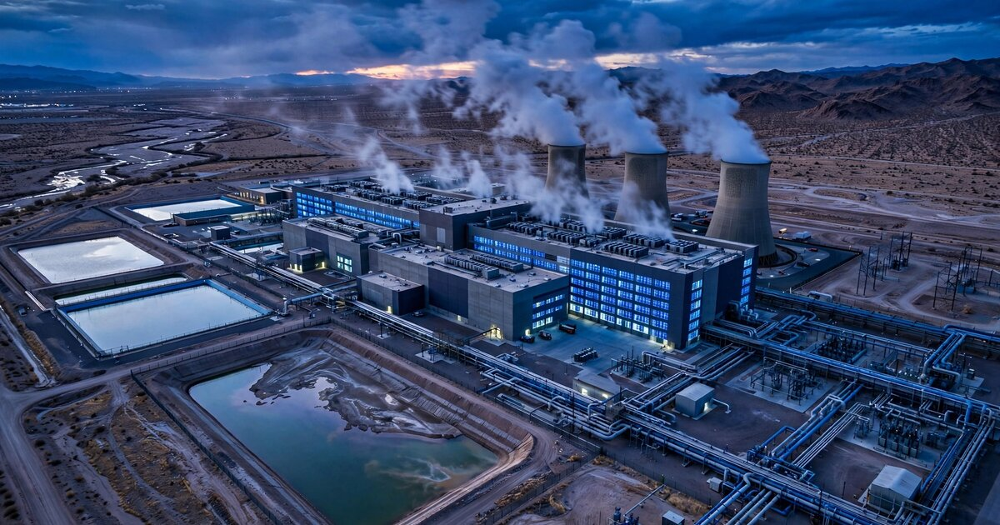

Data Center Water Compliance & Benchmarking SaaS
North American data centers consumed nearly 1 trillion liters of water in 2025, roughly what New York City drinks in a year. Google alone reported 29.5 million cubic meters of direct data center water consumption in calendar year 2024, Meta disclosed 2.97 million cubic meters across its owned facilities, and Microsoft reported 5.8 million cubic meters across its global operations. The industry tracks Power Usage Effectiveness religiously. Water Usage Effectiveness? Almost nobody measures it, fewer benchmark it, and the operators who will soon be required to report it by law have no tool designed to help them do so.

The Problem
The global data center industry is building capacity at a pace that has no precedent in infrastructure history. ResearchAndMarkets' December 2025 portfolio analysis counted 1,127 existing colocation data centers and 413 upcoming colocation projects in the United States alone, plus 150 upcoming hyperscale self-built facilities. Over 570 upcoming projects are expected to add more than 100 gigawatts of capacity. Virginia, Texas, Arizona, Illinois, Nevada, Georgia, and Ohio together account for over 70% of that pipeline. The U.S. data center infrastructure management (DCIM) market hit $3.02 billion in 2024 and is projected to reach $5.01 billion by 2029 at a 10.6% compound annual growth rate. Schneider Electric, Eaton, Vertiv, and Johnson Controls dominate DCIM with tools that track power, space, and cooling. Water, in every single one of these platforms, is an afterthought.
That was fine when nobody cared. It is not fine now. In the span of ten days in July 2026, the following happened: Columbus, Ohio introduced three data center water ordinances requiring water conservation plans, annual water-use reports, drought contingency plans, and mandatory use of recycled water where available. Wisconsin's Assembly passed AB-840, which would require closed-loop cooling and water-use reporting to the state Department of Natural Resources. The U.S. House Energy and Commerce Committee unanimously advanced the Ratepayer Protection Act, during which Rep. Diana DeGette of Colorado noted the bill fails to address water consumption, signaling that water provisions are coming next. The UK government announced plans to impose water-use limits on data center developments. Australia imposed fixed Power Usage Effectiveness limits and mandatory water-use disclosure for new facilities, catching OpenAI's proposed Sydney data center in the new rules.
Each of these regulations is slightly different. Columbus wants annual reports plus drought contingency plans. Wisconsin wants closed-loop verification plus DNR reporting. Virginia's existing data center incentive program has faced increasing scrutiny from local water authorities and investor groups. The EU's Corporate Sustainability Reporting Directive (CSRD) requires water disclosure from any company with EU operations above the revenue threshold, which captures every major colocation operator. And behind every one of these regulatory texts is a facility manager staring at the same spreadsheet, asking the same question: what exactly is our water consumption, where does it go, how does it compare to comparable facilities, and what report format does this particular jurisdiction want?
The DCIM platforms do not answer this question. Eaton's Brightlayer suite tracks "water, air, gas, electricity, and steam" as part of its Electrical Power Monitoring System, but it is an energy product that happens to have water meters in the sensor list. It does not map water data against jurisdictional reporting requirements, does not benchmark WUE against climate-zone peers, and does not generate the specific compliance documents that Columbus, Wisconsin, or the CSRD demand. Schneider Electric's EcoStruxure platform offers sustainability dashboards that report PUE and carbon metrics, with water as a tertiary data point. Vertiv publishes white papers on WUE optimization that recommend balancing cycles of concentration and installing variable frequency drives on tower fans, but sells no software to help operators implement those recommendations against their actual facility data. The gap is structural: DCIM vendors are power-and-cooling companies that bolted sustainability metrics onto existing platforms. Nobody has built the compliance-first water tool that the regulatory wave demands.
Market Size
Bottom-up TAM calculation: The addressable market is every data center operator that will face water reporting mandates within the next three years. The current U.S. portfolio includes 1,127 colocation facilities operated by approximately 190 major companies (ResearchAndMarkets 2025). Add the enterprise and government data centers that IBISWorld and the Uptime Institute estimate at approximately 2,700 facilities with 1 MW or more of IT load capacity in the United States. The near-term addressable operators are those in states and municipalities that have enacted or proposed water reporting requirements: Virginia (30% of upcoming U.S. capacity), Ohio, Wisconsin, Colorado, Arizona, and California collectively host or are building approximately 900 facilities above the 1 MW threshold. At a blended annual subscription of $24,000 ($2,000/month, positioned between the cost of a fractional compliance consultant and the price of an enterprise DCIM seat), the year-3 addressable market in the U.S. alone is $21.6 million ARR across 900 facilities.
The expansion TAM is international. The EU's CSRD covers an estimated 50,000 companies, and the European data center footprint includes approximately 900 colocation facilities across Germany, the Netherlands, Ireland, France, and the Nordics (Cushman & Wakefield 2025 market survey). The UK's proposed water-use limits would cover the 300+ facilities in its pipeline. Australia's new rules apply to facilities above 5 MW. The 3-year international expansion TAM adds approximately 1,200 addressable facilities at $30,000/year (higher due to multi-jurisdictional CSRD complexity), bringing the blended global TAM to $57.6 million ARR.
The transactional upside sits in water-credit trading. Several western U.S. water districts are developing transferable efficiency credits for commercial users that exceed conservation targets. If the platform facilitates credit generation and trading, a 10% brokerage fee on estimated annual credit volume of $40 million (based on existing California industrial water credit markets scaled to data center consumption) would add $4 million in non-SaaS revenue.
The Product
A water-specific compliance, benchmarking, and optimization platform for data center operators, connecting facility-level metering data with jurisdictional reporting requirements and anonymized peer benchmarks across climate zones. The product is not a DCIM replacement; it is the water-compliance layer that sits on top of whatever DCIM, BMS, or spreadsheet the operator already uses. Four modules:
- Regulatory mapping engine: Every data center operator faces a different compliance surface depending on their physical location. A facility in Loudoun County, Virginia has different water reporting obligations than one in Columbus, Ohio, which has different requirements than one in the City of London. This module maintains a continuously updated database of every municipal, county, state, federal, and international water reporting requirement that applies to data centers. The operator enters their facility addresses, and the engine returns a compliance calendar: what reports are due, in what format, to which authority, by which deadline. When Columbus passes its water conservation plan ordinance, the engine updates within 72 hours, flags every Columbus-based facility in the platform, and generates a pre-populated compliance template. The regulatory database is maintained by a combination of automated government document scanning and a small team of regulatory analysts, the same model that Avalara uses for sales tax jurisdictions and that RegTech companies use for financial compliance.
- WUE benchmarking dashboard: The fundamental question every data center operator needs answered is whether their water consumption is normal for their facility type, climate zone, and cooling architecture. A facility running evaporative cooling towers in Phoenix, Arizona should not benchmark against a facility running air-side economizers in Portland, Oregon. This module ingests anonymized water consumption and WUE data from participating operators and produces benchmarks segmented by ASHRAE climate zone, cooling type (evaporative, air-cooled chiller, hybrid, liquid-to-chip), IT load density (kW per cabinet), and facility age. A participating operator sees where their facility sits in the distribution for its peer group: "Your 10 MW facility in ASHRAE Zone 2B with evaporative cooling has a WUE of 1.8 L/kWh, which places you at the 72nd percentile. Comparable facilities in your climate zone average 1.4 L/kWh." The benchmarking data creates the network effect that makes the platform sticky: every new participant improves the benchmark accuracy for everyone else, and the data becomes embedded in the operator's annual sustainability reporting and capital planning cycles.
- Automated compliance reporting: The output of water compliance is a document. Different jurisdictions want different documents: Columbus wants an annual water-use report with efficiency targets and a drought plan. Wisconsin wants DNR filings with closed-loop verification. The CSRD wants water disclosure in the European Sustainability Reporting Standard (ESRS) E3 format. SEC climate disclosure rules (if they survive legal challenge) want Scope 3 water data in a specific framework. This module auto-generates every required document from the facility's metering data, pre-populated with the correct format, metrics, and filing instructions for each applicable jurisdiction. The operator reviews, signs, and submits. The alternative is hiring an environmental compliance consultant at $150-$250/hour to manually compile data from the BMS, format it for each jurisdiction, and file it, a process that takes 40-80 hours per facility per year for a multi-jurisdictional operator.
- Cooling-water optimization modeler: The economic tradeoff between water-cooled and air-cooled systems is the single largest capital decision a data center operator makes regarding water, and the math changes with every new local water tariff, drought surcharge, or regulatory requirement. This module models the total cost of ownership for different cooling architectures at a specific location, incorporating local water prices, projected tariff increases, regulatory compliance costs, energy costs for alternative cooling methods, and carbon implications. A 20 MW facility considering a transition from evaporative towers to air-cooled chillers can model the upfront capital cost ($3-5 million for chillers), the energy penalty (10-15% higher PUE in hot climates), the water savings (potentially 100% reduction in direct consumption), and the net cost impact including any regulatory compliance cost avoidance. The output is a decision-grade financial model, not a marketing pitch for either cooling technology.
Unit Economics
| Metric | Value |
|---|---|
| Monthly subscription (Standard: compliance mapping + reporting for single jurisdiction) | $1,500/facility |
| Monthly subscription (Enterprise: multi-jurisdiction + benchmarking + optimization modeler) | $3,500/facility portfolio |
| Blended ARPU | $2,000/month |
| Regulatory database maintenance cost per subscriber/month | $85 |
| Data infrastructure and metering integration cost per subscriber/month | $55 |
| Customer acquisition cost | $6,200 |
| Expected LTV (30-month avg retention, 88% gross margin) | $52,800 |
| LTV:CAC ratio | 8.5:1 |
| Gross margin | 88% |
| Startup cost (18-month runway, team of 12) | $4.2M |
| Break-even subscribers | 110 facilities |
| Break-even timeline | 18 months |
Methodology note: The 30-month retention assumption is derived from comparable regulatory compliance SaaS products. Avalara (sales tax compliance) and Watershed (carbon accounting) both report retention rates above 90% annually because regulatory obligations do not expire when a subscription lapses. Once an operator uses the platform to file their first Columbus water report or CSRD E3 disclosure, switching costs include re-mapping their metering data, re-learning a new compliance format, and risking a missed filing deadline. The $6,200 CAC reflects a direct sales motion targeting facility managers and sustainability directors at industry events (Data Center World, DCD Connect, Uptime Institute conferences) and through channel partnerships with the DCIM vendors whose tools the platform integrates with. The break-even calculation: 110 facilities × $2,000/month × 12 months × 88% gross margin = $2.32M, covering the $4.2M startup cost with accumulated margin over months 12-18. The LTV math: $2,000 × 30 months × 88% = $52,800.
Go-to-Market
Phase 1 (months 1-8): Build the regulatory mapping engine for the five U.S. jurisdictions with the most advanced data center water requirements: Virginia (Loudoun County, Prince William County), Columbus/Ohio, Wisconsin, Colorado, and Arizona. Recruit 30 facilities across these markets for free beta access in exchange for anonymized water consumption data to seed the benchmarking engine. Target colocation operators in the Rank 10-50 range by capacity, the companies large enough to face regulatory scrutiny but small enough that they lack in-house sustainability teams. Aligned Data Centers, CyrusOne, QTS, and Switch each operate 20-80 facilities and would benefit from centralized compliance management across multiple jurisdictions. Distribution through Data Center World (the industry's largest annual conference, 8,000+ attendees), the Uptime Institute's annual symposium, and direct outreach through the Data Center Coalition (the trade association whose member list is the prospect list).
Phase 2 (months 9-16): Launch paid Standard tier at $1,500/month. Expand the regulatory database to cover all 50 U.S. states plus the EU CSRD and UK frameworks. Begin building DCIM integrations: Eaton Brightlayer, Schneider EcoStruxure, and Vertiv's monitoring platforms each have APIs or data export formats that the compliance layer can ingest. The integration strategy is deliberately cooperative, not competitive: the platform makes existing DCIM investments more valuable by extracting compliance-grade insights from data the operator is already collecting. Channel partnerships with the DCIM vendors themselves become possible because the water compliance module is a feature their enterprise customers are asking for, and building it in-house is a distraction from their core power-and-cooling roadmap.
Phase 3 (months 17-24): Enterprise tier launch at $3,500/month for operators with facilities in multiple jurisdictions. Begin building the benchmarking network toward statistical significance: 200 participating facilities across 8 ASHRAE climate zones, enough to produce meaningful WUE percentile rankings for the most common facility configurations. Start conversations with hyperscalers (Google, Microsoft, Meta, Amazon) about enterprise licensing for their owned-and-operated portfolios. The hyperscalers currently compile water data using internal tools and sustainability consultants; a standardized platform reduces their reporting burden and provides the investor-grade third-party verification that shareholder groups like Green Century Capital Management and Calvert Research are demanding. Meta disclosed that its water usage rose 51% from 3,726 megaliters in 2020 to 5,637 megaliters in 2024, but only for sites it owned, not leased facilities. Google reported owned-and-leased but not third-party-operated sites. Amazon disclosed usage per unit of power but not total consumption. A standardized reporting platform resolves these gaps.
Competitive Landscape
| Company | What It Does | Water Compliance? | Pricing |
|---|---|---|---|
| Eaton (Brightlayer) | DCIM: power, space, cooling monitoring for data centers | Tracks WAGES metrics (water as one of five); no regulatory mapping or jurisdictional compliance | Enterprise license |
| Schneider Electric (EcoStruxure) | DCIM + sustainability dashboards for facilities | PUE and carbon focus; water is tertiary metric with no benchmarking | Enterprise license |
| Vertiv | Cooling infrastructure + monitoring | Publishes WUE optimization guidance; sells no compliance software | Hardware + service |
| Watershed | Carbon accounting platform for enterprises | Covers water as part of Scope 3 environmental data; not data-center-specific, no WUE benchmarking | $50K-500K/yr enterprise |
| Measurabl | ESG data management for commercial real estate | Covers water as part of building-level ESG; not data-center-specific | SaaS per building |
| This startup | Water compliance, WUE benchmarking, and optimization for data centers | Core product: regulatory mapping + automated reporting + climate-zone benchmarking + cooling optimization | $1,500-3,500/mo |
The competitive landscape mirrors what existed in carbon accounting before Watershed and Persefoni emerged in 2020-2021. Every enterprise software platform tracked emissions as a line item in a broader sustainability dashboard, but nobody built the compliance-first tool that mapped specific reporting obligations to specific facility data and generated the specific documents that regulators demanded. Watershed reached $1 billion valuation in three years by solving exactly that problem for carbon. The water-compliance gap for data centers is structurally identical, smaller in total addressable market but with a more concentrated buyer universe and higher willingness to pay because the regulatory consequences of non-compliance (permit denial, tax incentive clawback, shareholder litigation) are acute and facility-specific.
Why Now
Three forces converged in the first half of 2026, and all three are structural rather than cyclical.
First, the regulatory wave is no longer hypothetical. The week of July 20, 2026 produced more data center water legislation than the entire previous decade. Columbus, Wisconsin, the UK, and Australia all moved independently, each drafting different requirements with different metrics and different filing formats. This is exactly how environmental regulation works: it starts at the local level, proliferates inconsistently, and then federal frameworks attempt to harmonize a decade later. The compliance burden for a multi-site operator is not one regulation; it is the combinatorial explosion of many regulations, each with its own definitions, thresholds, and deadlines. Sales tax compliance followed this identical pattern, and Avalara built a $5.4 billion business (acquired by Vista Equity in 2024) by maintaining the regulatory database that no individual company wanted to maintain itself.
Second, investor pressure is creating disclosure requirements faster than regulators can. Reuters reported in April 2026 that Green Century Capital Management, Calvert Research, and other institutional investors are pressing Amazon, Microsoft, and Google on site-level water disclosure. Jason Qi, lead technology analyst at Calvert, stated explicitly: "We haven't seen them disclosing enough about their water consumption and the impact on the local community." Shareholder resolutions demanding water transparency are being filed at all three companies. When hyperscalers face investor pressure, they pass it downstream to their colocation providers: if you host Google Cloud workloads in your facility, Google will soon require you to report your WUE as a condition of the lease. The compliance obligation propagates through the supply chain, and every colocation operator who hosts hyperscaler workloads becomes an involuntary water reporter.
Third, the physics of AI workloads make water consumption worse, not better. A peer-reviewed study published in Cell Reports Sustainability in early 2026 compiled the first comprehensive cross-company analysis of data center water consumption. The researchers found that for the nine tech companies reporting both electricity and water data, total direct water consumption was 55.8 million cubic meters on 97.8 TWh of electricity, yielding a weighted average of 0.59 liters per kilowatt-hour consumed. AI inference workloads run hotter and denser than traditional compute: NVIDIA's H100 and B200 GPU clusters require liquid cooling at densities of 40-100 kW per rack, compared to 5-15 kW for conventional servers. Higher density means more heat per square foot, which means more cooling, which in most facilities means more water. The industry's transition to AI is mechanically increasing water consumption per unit of compute, precisely as regulators are moving to restrict it.
Original Contribution: The Regulatory Fragmentation Cost
A calculation nobody has published: We can estimate the compliance cost that data center operators face from the emerging patchwork of water regulations by examining the labor required to comply with each jurisdiction independently.
A typical water compliance filing requires: metering data compilation (8-12 hours per facility per year), metric calculation and verification (4-6 hours), report formatting per jurisdictional template (6-10 hours), internal review and sign-off (4-8 hours), and filing/submission (2-4 hours). For a single jurisdiction, the total is approximately 24-40 hours per facility per year. At a blended rate of $175/hour for an environmental compliance consultant (the midpoint of the $150-$250 range quoted by firms like ERM, Ramboll, and Arcadis for data center sustainability work), a single facility in one jurisdiction spends $4,200-$7,000 per year on water compliance labor.
A multi-site operator with 20 facilities across three jurisdictions faces a multiplicative burden. If each jurisdiction requires a different report format (Columbus wants water conservation plans; Wisconsin wants DNR filings; the CSRD wants ESRS E3 disclosures), the per-facility cost does not triple, because the metering data compilation is done once, but the formatting and filing labor does: roughly 50-70 hours per facility per year across three jurisdictions, or $8,750-$12,250 per facility. For 20 facilities: $175,000-$245,000 per year in compliance labor alone. That figure rises to $350,000-$490,000 when a fourth and fifth jurisdiction are added, because each new regulatory format requires learning curve time, template development, and periodic updates as the rules evolve.
A software platform that automates the metering-to-report pipeline can reduce the per-facility time from 50-70 hours to approximately 8-12 hours (review and sign-off only), cutting compliance labor costs by 75-85%. At $2,000/month ($24,000/year) per facility, the software pays for itself when the operator would otherwise spend more than $24,000/year in consultant time, which occurs at roughly the two-jurisdiction threshold for a mid-size facility. The ROI inflection point is precisely where the regulatory patchwork is headed: every additional ordinance makes the platform more valuable, and the ordinances are arriving monthly.
Limitations
This analysis assumes that the current wave of municipal and state water regulations will continue to expand rather than consolidate or stall. Political dynamics could push the other direction. Data centers bring jobs, tax revenue, and economic development. Several Virginia counties have actively courted data center development with tax incentives, and imposing water restrictions could slow that pipeline. Columbus's proposed ordinances may not survive industry lobbying. Wisconsin's AB-840 stalled in the Senate after a broad coalition opposed specific provisions. If the regulatory wave recedes, the compliance urgency recedes with it, and the product becomes a nice-to-have benchmarking tool rather than a must-have compliance platform.
The benchmarking module faces a cold-start data problem. Meaningful WUE benchmarks require participation from enough facilities in each climate zone and cooling-type combination to produce statistically significant percentiles. With 14 ASHRAE climate zones in the U.S. and four primary cooling architectures, there are 56 benchmark cells. Producing a credible benchmark requires at least 15-20 participating facilities per cell, which implies 840-1,120 total participants, a number that exceeds the near-term addressable market by a factor of three or more. The practical implication is that early benchmarks will be coarse (aggregated across multiple climate zones or cooling types), and fine-grained comparisons will not be available until the platform reaches significant scale. This is the same bootstrap problem STR faced in hotels, and it took STR roughly eight years to reach comprehensive coverage.
The compliance cost estimates use consultant hourly rates that may overstate the actual alternative cost for large operators with in-house sustainability teams. A colocation operator like Equinix or Digital Realty has dedicated sustainability staff who already compile water data as part of their annual sustainability reports. For these operators, the marginal cost of an additional jurisdictional filing is not $175/hour, it is the opportunity cost of their salaried employee's time, which may be substantially lower. The strongest product-market fit is with mid-tier operators (20-100 facilities) that have regulatory obligations but not dedicated sustainability departments.
Strongest Counterargument
The most serious objection is that Eaton, Schneider Electric, or Vertiv will add water compliance features to their existing DCIM platforms before a startup can build a customer base, and their existing installed base gives them an insurmountable distribution advantage.
The argument has teeth. Eaton's Brightlayer DCIM already monitors water flow rates. Schneider's EcoStruxure already generates sustainability dashboards. Adding a jurisdictional compliance layer to an existing platform is a feature addition, not a new product build, and the DCIM vendor can bundle it at minimal incremental cost against a customer who already pays $50,000-$200,000/year for the broader DCIM suite. A startup charging $24,000/year for a standalone water compliance tool looks expensive next to a "free" module in an existing enterprise contract.
The counterargument's weak point is execution priority. DCIM vendors are power-and-cooling companies whose roadmaps are driven by the data center industry's core infrastructure needs: power capacity planning, thermal management, and asset lifecycle tracking. Water compliance is a regulatory side quest for them, not a revenue driver. Schneider Electric's DCIM division generates revenue by selling PDUs, UPSes, and cooling units; the software is a value-add that supports hardware sales. Dedicating engineering resources to maintaining a regulatory database of municipal water ordinances across 500 U.S. jurisdictions is not where Schneider's product managers want to spend their sprint capacity. Avalara built a $5.4 billion business despite the fact that every ERP vendor (SAP, Oracle, NetSuite) offered basic sales tax calculation. The ERP vendors never invested deeply enough in maintaining the jurisdictional database because it was always a side feature. The same dynamic is likely to play out in DCIM: the incumbents will announce water compliance features, ship a basic version that covers federal requirements, and never invest in the municipal-level granularity that operators actually need.
The Bottom Line
The data center industry consumed nearly 1 trillion liters of water in North America in 2025 and is building capacity that will double consumption by 2030. Regulators at the municipal, state, national, and supranational levels are responding with water-use reporting mandates that differ in scope, metrics, format, and deadlines, creating a compliance fragmentation problem that no existing tool addresses. DCIM platforms track water as a peripheral metric alongside power and cooling; they do not map water data against jurisdictional requirements, benchmark WUE across climate-zone peers, or generate the specific compliance documents that each regulator demands. A purpose-built water compliance platform that maintains the regulatory database, automates the metering-to-report pipeline, and provides benchmarking data across comparable facilities can reduce compliance labor costs by 75-85% for multi-jurisdictional operators. The timing is driven by the simultaneous convergence of local regulation, investor disclosure pressure, and the physics of AI-driven water consumption increases. If the regulatory wave sustains its current trajectory, the compliance surface for a 50-facility operator will include 15-20 distinct jurisdictional requirements within three years, and the cost of maintaining compliance manually will exceed the platform subscription by a factor of five or more.
What You Can Do
If you operate a data center: pull your water bills for the last 24 months and calculate your facility's WUE. Divide your total annual water consumption (in liters) by your total annual IT equipment electricity consumption (in kWh). The global average WUE implied by International Energy Agency data is approximately 0.56 L/kWh; the tech company weighted average from 2024 sustainability reports is 0.59 L/kWh. If your number is above 1.0, you are consuming significantly more water per unit of compute than comparable facilities, and you should investigate whether your cooling towers are operating at suboptimal cycles of concentration, whether your economizer hours are underutilized, or whether your facility is simply in a climate zone where evaporative cooling is inherently water-intensive and a transition to hybrid or air-cooled systems should be modeled.
If you are a colocation operator with facilities in Virginia, Ohio, Wisconsin, Colorado, or Arizona: contact your local water authority and ask whether data center water-use reporting requirements are under consideration. Several of these jurisdictions are in the proposal stage, and operators who engage during the comment period can shape the reporting format rather than being forced to comply with a format designed without industry input. The Columbus ordinances were introduced July 22, 2026, and will move through committee. Your comment window is measured in weeks.
If you are an investor evaluating data center equities (Equinix, Digital Realty, CyrusOne, QTS, Switch): request site-level WUE data alongside PUE in your next sustainability briefing. Equinix and Digital Realty both report aggregate PUE but do not publish facility-level WUE. The absence of this data is a materiality gap. A facility in Phoenix with a WUE of 2.5 L/kWh faces meaningfully different regulatory and operational risk than one in Portland at 0.3 L/kWh, and aggregate reporting obscures that variance entirely.
Related
📰 Building Energy Compliance SaaS — the same regulatory fragmentation problem applied to commercial building energy benchmarking, where ASHRAE 90.1, local energy codes, and state disclosure laws create a compliance patchwork
📰 Cooling Tower Legionella Compliance SaaS — another water-infrastructure compliance play targeting the 700,000+ cooling towers in the U.S. that face health department registration and testing requirements
📰 PFAS Water Compliance SaaS — EPA's April 2024 PFAS drinking water limits created a compliance wave for water systems, a regulatory dynamic parallel to what's emerging for data center water